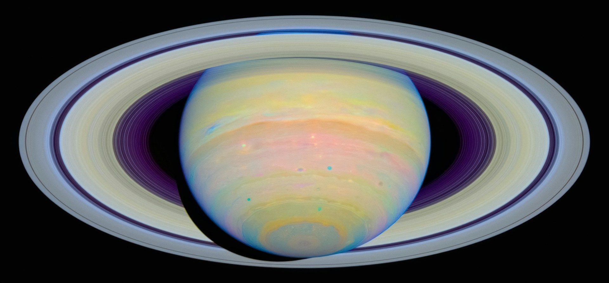
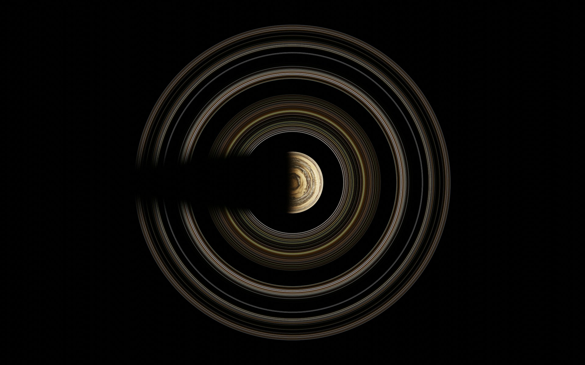

Saturn is the sixth planet from the sun.
It is composed of gasses mainly helium and hydrogen,
Saturn is also known for its rings that are it made out of ice, rock
and dust.
The gas giant has been measured to be the second largest planet
in our solar system second only to Jupiter.
Saturn was measured to be 9 times as wide as the Earth.
Making its volume 760 times that of the Earth.
At it's north pole there is a huge geometric storm.
That glows and spins constantly.


Saturn has 293 confirmed moons.
The most well known one is named Titan,
it is saturns biggest moon and the second biggest moon in our solar
system. It's so huge that mercury the planet is smaller.
The atmosphere consists of dense nitrogen gas.
It also has a frigid climate where its
on average 179c
Other major moons are Enceladus, lapetus, Mimas, Tethys and
Hyperion.
These aren't as well known but have some points of interest.
Like large craters, still having a decent size, irregular shape,
Chaotic rotation and having duo toned hemispheres.